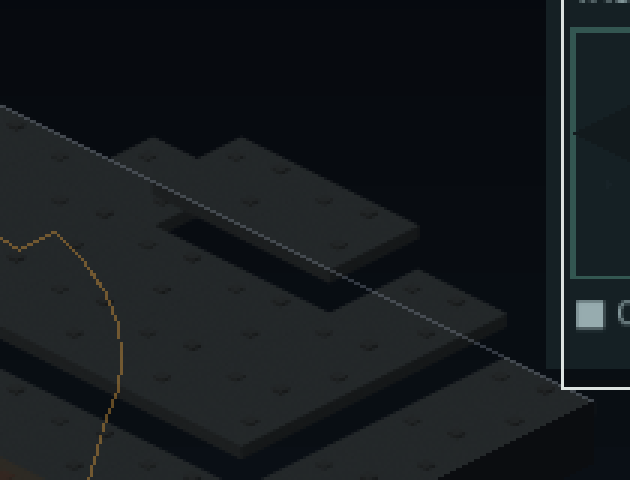
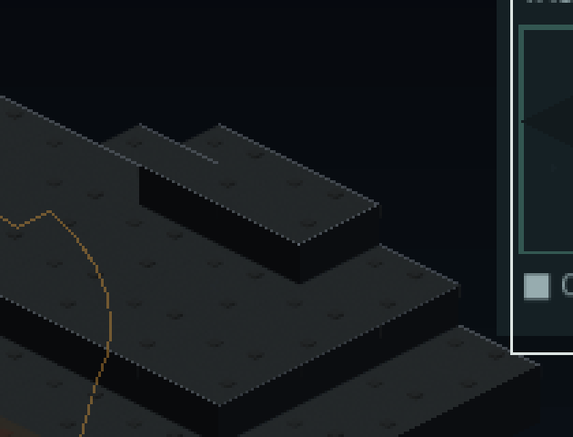

Cliffs stop looking like floating tiles, with zero renders
TER-07 fills the gap elevation opened: a raised tile's surface moves up 32 px and nothing fills the drop beneath it. Cliff faces and ramps are drawn procedurally from the existing palette instead of rendered as assets — zero renders, zero atlas growth, asserted rather than claimed — and a bug the verification caught rather than review: a ramp declared on the low side was silently never drawn.
TER-07 — elevation stops looking like floating tiles. Cliff faces and ramps are now drawn procedurally, from the same palette the rest of the board already uses — zero renders, zero atlas growth, checked rather than claimed: pack_atlas.py --check reports nothing written.
The gap the previous terrain work left open
Decision 057's terrain work made a tile's elevation real and proved it to the pixel. It also made a raised tile look wrong in a specific way: the surface moves up 32 px and nothing fills the gap where the ground used to be, so a plateau reads as floating slabs with see-through edges beneath them. The intuitive fix is to render cliff assets — and that is backwards. A rendered cliff set is roughly seventeen asset types, a .blend, a manifest entry and atlas space, all committed before anyone has looked at a single cliff in the game. Decision 066 already refused atlas growth on a measured VRAM projection, and the cheapest way to earn that cost later is to play the free version first. TER-14, which decides whether rendered cliff assets are worth it at all, now inherits an answer instead of a question.


The bug the verification caught, which review would not have
The first pass gated the ramp lookup inside the if nh < h cliff-only branch — so a ramp declared on the low side, climbing to a higher neighbour, was silently never drawn. anchor-01's actual authored ramp does exactly this: tile (8,1) climbing +x to (9,1), height 0 to 1. The boundary just rendered flat. That failure mode looks exactly like "no ramp was authored here", not like a defect — it was found by capturing before and after and comparing the frames, not by reading the diff. The fix pulls the ramp check out to run regardless of which side is higher.
terrain.ramps has been in data/schema/anchor.schema.json all along, and resolve_terrain() in sim/content.py explicitly never consulted it. This is the first time that authored data reaches the screen: a per-corner-height tilted quad plus two filler triangles on the seam against flat lateral neighbours, keyed so a ramp suppresses the plain cliff at that boundary.
32 px, judged by eye for the first time
Decision 057 chose Iso.LEVEL_PX = 32 because it lands a raised tile on a whole pixel and makes two levels exactly one tile height — correct arithmetic that said nothing about whether it looks right. Played on anchor-01's authored two-level plateau at zoom 1.0 and at 0.61: one 32 px face reads as a clean step without dominating the board, and two levels stack as two visually distinct tiers rather than one tall block. No case was found where it looked too small to notice or too large against a tile's 128×64 px footprint.
AnchorView._draw mean 0.383 ms, p95 0.432 ms, over 300 frames on anchor-01. Faces are built once in _rebuild_tile_cache(), never per frame — the PRD's own risk 5 measures naive per-frame terrain at 52 ms/frame at 64², and decision 073 has since set the board target to 48², so per-frame terrain was never on the table.
| face | sampled from a real frame | predicted from the palette |
|---|---|---|
| left / south | (9, 10, 12) | STONE_DARK × 255 = (8.9, 10.2, 12.2) |
| right / east | (11–12, 13, 15–16) | STONE_DARK × 1.3 × 255 = (11.6, 13.3, 15.9) |
Colour was pixel-sampled from a real rendered frame, not compared against the source Color(...) literals — the only way this project has ever caught the sRGB/linear class of error that made the board a flat grey slab three separate times before (LF-023/020/022). Both faces land within anti-aliasing rounding, and no literal Color(...) appears anywhere in the new code: every face traces to the existing STONE_DARK/ALLOY_LIGHT palette. Regression-checked against the 23 anchors that carry no terrain block — they render identically to before.
A placement detail worth a sentence: faces are appended into _tile_cache, the same painter-ordered array _draw_board() already culls and draws, which runs before _draw_entities() — so a face is guaranteed to draw under every unit standing on the tile above it. Putting them in board_props.gd would have been the natural-looking mistake; that layer's own DRAW_Z docstring explains why it sits above everything else instead.
A parallel worktree, and the class_name trap it hit on the way across
This work ran in an isolated git worktree, in parallel with a rules workstream, with disjoint file ownership — and the split held: zero cross-touches, and the cherry-pick onto a main that had moved two rules PRs ahead applied with zero conflicts. But bringing it across surfaced a known trap immediately. board_props.gd gained a class_name BoardProps so anchor_view.gd could call its pillar_cap()/pillar_faces() as static functions — a bare preload() constant resolves a script's plain constants but not its static funcs, which Godot's checker only resolves through an actual class identity. A new class_name is invisible until the editor imports it, and the global class cache is gitignored: gdscript parses went from 35/35 to 34/35, reporting Identifier not declared rather than naming the real cause, until an in-place import registered the name. Exactly the trap CLAUDE.md already documents, hit the moment the work changed trees.
Commits
6ad1554feat(terrain): cliffs and ramps drawn procedurally, zero renders774e6fcdocs(decisions): 32 px is the right step, judged by eye rather than derived